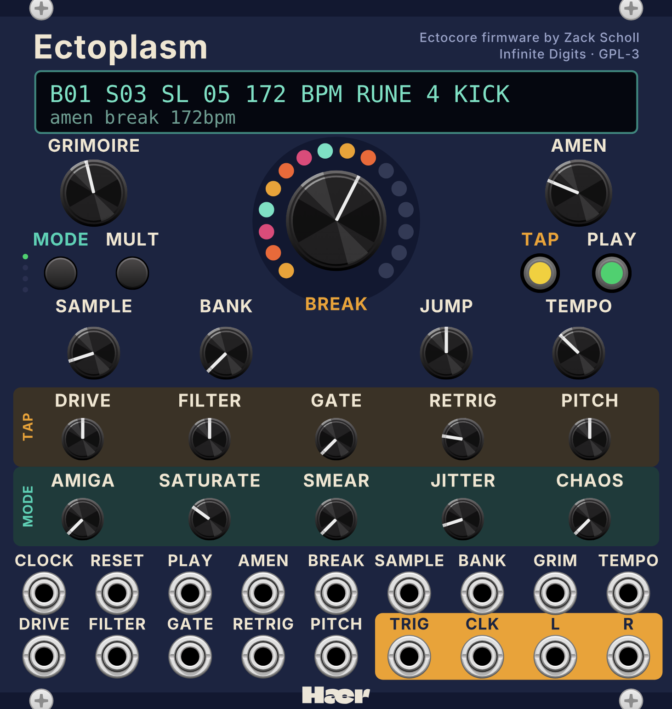

| BREAK | How often the current rune's effects fire, from 0 to 100%. The ring is the firmware's own LED wheel. |
| GRIMOIRE | Picks which of the 7 runes (effect sets) BREAK uses. Edit them under right-click > Grimoire. Its 16 effects are saturate, shaper, fuzz, bitcrush, time stretch, delay, comb, beat repeat, tighten, reverb, pan, scratch, filter, repitch, reverse and tape stop. |
| AMEN | Fully left plays straight. In the middle, it loops 1 to 32 randomly chosen slices. Fully right is generative, with new slices and a fill every two bars. Turn it to fully right and back to re-roll. |
| JUMP | In the middle, nothing happens. To the right, it jumps to a random slice and comes back in time. To the left, it jumps and carries on from there, which drifts more. |
| SAMPLE · BANK | The sample within the bank, and which bank (only banks that hold samples count). |
| TEMPO | Sets the BPM when nothing is patched into CLOCK. |
| MODE · MULT | MODE sets what TRIG outputs: Kick, Snare, Transient or Random (shown by the four lights and on the display). MULT: tap to multiply the CLK output, hold to divide it. |
| TAP · PLAY | Tap tempo (without a clock), and start/stop. |
| DRIVE | Volume up to 12 o'clock, then saturation, then fuzz. |
| FILTER | DJ filter: low-pass to the left, high-pass to the right, off in the middle. |
| GATE | Chops each slice short. It's off at minimum. |
| RETRIG | The chance of stutter retriggers. |
| PITCH | Pitch down to the left, up to the right. |
| AMIGA · SATURATE · SMEAR · JITTER · CHAOS | The Mode layer's digital degraders: lo-fi resampling, digital saturation, smear, timing jitter and "trembler" chaos. Small amounts go a long way. |
| CLOCK | 2 PPQN clock in (two pulses per beat). |
| RESET | Makes the next clock pulse beat 1. Send it with, or just before, a clock pulse. |
| PLAY | A trigger toggles start/stop. |
| AMEN · BREAK · SAMPLE | The Ectocore's own CVs. AMEN CV picks slices directly: the AMEN knob sets the start of the range and JUMP sets its end. Set Jump, Repeat or Split under right-click > Device settings > Amen CV behavior. |
| BANK · GRIM | 0 to 10 V sweeps across the banks / runes, added to the knob. |
| TEMPO | 10 BPM per volt, added to the knob. It's ignored while CLOCK is patched. |
| DRIVE · GATE · RETRIG | 0 to 10 V, added to the knob. FILTER and PITCH: ±5 V around the knob. |
| TRIG · CLK | TRIG fires on the drum hits chosen by MODE. CLK is the clock out (×/÷ with MULT). |
Plain WAV folders: a folder of WAVs fills bank 1, then bank 2 (16 files per bank). Alternatively, a folder of sub-folders makes each sub-folder one bank. Each file is cut into 16 equal slices. The BPM comes from the file name, or from the loop length. Files under a second, with no BPM in the name, play as one-shots. Any rate, bit depth or channel count loads. Nothing is written to your folder.
Sample-manager folders (from Infinite Digits' free sample manager or ectocore.rocks) load exactly as on the hardware, with hand-placed slices, kick/snare/transient markers and settings. TRIG's Kick, Snare and Transient modes need those markers. With plain WAVs, use Random.
1. Detroit break bed. Use a clock from Live (CV Tools via the disting NT, 2 PPQN) into CLOCK. Set AMEN at about 10 o'clock (short random loops), BREAK at 20%, FILTER slightly left. Send TRIG in Kick mode to your 909 kick so it follows the break's kicks. Variation: slowly sweep FILTER with a 16-bar LFO.
2. Autechre-ish mutation. Patch Marbles' X1 into AMEN CV (Repeat behavior) and a slow random into GRIM. Set JUMP to 2 o'clock and RETRIG to 30%. Add CHAOS at 15% and JITTER at 10%. Variation: send TRIG (Random) into Marbles' clock so the break re-clocks its own randomness.
3. Arrangement moves. Sequence BANK CV from Long Form (or any slow step sequencer) to change sections. Use PLAY triggers for drops, and RESET on the downbeat to bring everything back in time. GATE with a rising envelope makes a build.
Ectoplasm runs the Ectocore / EZEPTOCORE firmware by Zack Scholl (Infinite Digits), from github.com/schollz/_core, under GPL-3.0. Ectoplasm is GPL-3.0 too, and its source is in hardyfinn/2026SoloModules (folder Ectoplasm). The panel and the Hær logo are Haer's own. No breaks are bundled. Infinite Digits' own free Rack plugin (EZEPTOCORE, with an Ectocore panel option) is the original 8 HP layout.